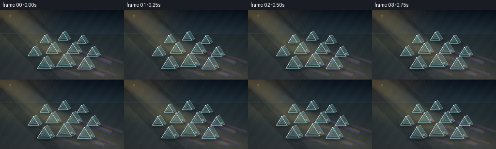
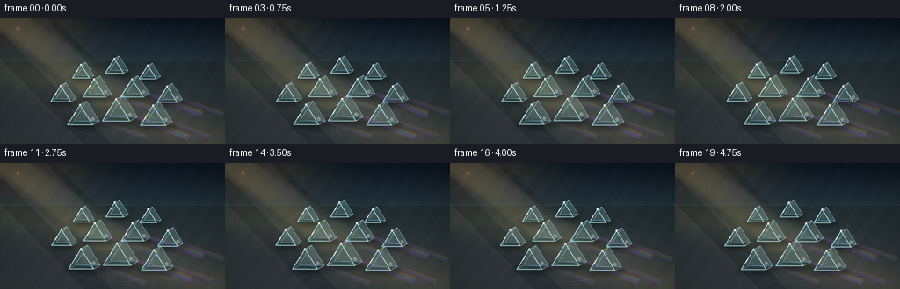
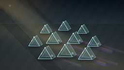

CODING AGENTS AS PIXEL WORLD MODELS
traex/GPT-5.6-Sol · phygen_080
点击播放 · 原生 RGB 像素
逐轮保存的候选
回放视频、检查图与代码变化。
每份候选均可单独播放。实际图片检查记录在下方工具轨迹中。
候选 01播放与检查图
点击播放 · 原生 RGB 像素


展开代码变化
--- 上一保存版本
+++ 本次保存版本
@@ -0,0 +1,221 @@
+from pathlib import Path
+import math
+import numpy as np
+from PIL import Image, ImageDraw, ImageFilter
+import artifact_io
+
+# Procedural high-resolution vector/light render; downsampled for clean antialiasing.
+W, H, N, SCALE = 256, 144, 20, 4
+RW, RH = W * SCALE, H * SCALE
+TAU = 2 * math.pi
+
+
+def scpt(q):
+ return tuple(int(round(v * SCALE)) for v in q)
+
+
+def poly(im, pts, fill):
+ ImageDraw.Draw(im).polygon([scpt(p) for p in pts], fill=fill)
+
+
+def line(im, pts, fill, width=1):
+ ImageDraw.Draw(im).line([scpt(p) for p in pts], fill=fill,
+ width=max(1, int(width*SCALE)), joint='curve')
+
+
+def ellipse(im, box, fill, outline=None, width=1):
+ d = ImageDraw.Draw(im)
+ b = tuple(int(round(v*SCALE)) for v in box)
+ d.ellipse(b, fill=fill, outline=outline, width=max(1, int(width*SCALE)))
+
+
+def rgba_layer():
+ return Image.new('RGBA', (RW, RH), (0, 0, 0, 0))
+
+
+def composite(base, layer):
+ return Image.alpha_composite(base, layer)
+
+
+def make_background(phase):
+ y, x = np.mgrid[0:RH, 0:RW].astype(np.float32)
+ xn, yn = x / SCALE, y / SCALE
+ # Deep blue-gray room and slate table, warmed where the sunshine falls.
+ horizon = 48.0
+ wall_t = np.clip(yn / horizon, 0, 1)
+ top = np.array([10., 20., 31.])
+ low = np.array([34., 48., 57.])
+ rgb = top[None,None,:] * (1-wall_t[...,None]) + low[None,None,:]*wall_t[...,None]
+ surf_t = np.clip((yn-horizon)/(H-horizon), 0, 1)
+ surface = np.stack([31+20*surf_t, 43+14*surf_t, 48+12*surf_t], axis=-1)
+ rgb = np.where((yn>=horizon)[...,None], surface, rgb)
+ # Warm glow from a sunlit window beyond the upper left.
+ glow = np.exp(-(((xn-22)/76)**2 + ((yn-1)/54)**2))
+ rgb += glow[...,None] * np.array([48., 34., 15.])
+ # Broad diagonal pool of sunlight on the surface.
+ beam_axis = yn - (0.43*xn + 40 + 1.4*math.sin(phase))
+ pool = np.exp(-(beam_axis/31)**2) * np.clip((yn-43)/28, 0, 1)
+ rgb += pool[...,None] * np.array([25., 21., 11.])
+ # Fine slate grain, stable enough for temporal coherence.
+ grain = 1.25*np.sin(xn*.26 + yn*.19) + .75*np.sin(xn*.73 - yn*.33)
+ rgb += grain[...,None]
+ # Vignette.
+ r = ((xn-W/2)/(W*.72))**2 + ((yn-H/2)/(H*.82))**2
+ rgb *= np.clip(1.06-.32*r, .68, 1.0)[...,None]
+ arr = np.uint8(np.clip(rgb, 0, 255))
+ return Image.fromarray(arr, 'RGB').convert('RGBA')
+
+
+def prism_geom(cx, cy, size):
+ w, h = size*.72, size
+ ex, ey = size*.38, -size*.22
+ A=(cx,cy-h*.72); B=(cx-w,cy+h*.42); C=(cx+w,cy+h*.42)
+ A2=(A[0]+ex,A[1]+ey); B2=(B[0]+ex,B[1]+ey); C2=(C[0]+ex,C[1]+ey)
+ return A,B,C,A2,B2,C2
+
+
+def draw_prism(base, cx, cy, size, phase, idx):
+ A,B,C,A2,B2,C2 = prism_geom(cx,cy,size)
+ # Soft contact shadow and subtle colored internal shadow.
+ sh=rgba_layer()
+ ellipse(sh,(cx-size*.95, cy+size*.28, cx+size*1.35, cy+size*.66),(0,4,8,105))
+ sh=sh.filter(ImageFilter.GaussianBlur(2.7*SCALE))
+ base=composite(base,sh)
+
+ glass=rgba_layer()
+ # Rear and connecting faces: distinct facets establish triangular-prism form.
+ poly(glass,[A2,B2,C2],(111,210,226,35))
+ poly(glass,[A,A2,B2,B],(101,203,221,61))
+ poly(glass,[A,A2,C2,C],(188,235,233,45))
+ poly(glass,[B,B2,C2,C],(37,119,145,46))
+ poly(glass,[A,B,C],(154,225,231,48))
+ # Interior refraction bands clipped approximately to triangular face.
+ glintx = cx + size*(-.30 + .18*math.sin(phase+idx*.7))
+ poly(glass,[(glintx,cy-size*.48),(glintx+size*.13,cy-size*.28),
+ (cx+size*.33,cy+size*.36),(cx+size*.18,cy+size*.39)],(244,255,242,44))
+ poly(glass,[(cx-size*.43,cy+size*.12),(cx+size*.47,cy+size*.29),
+ (cx+size*.56,cy+size*.39),(cx-size*.58,cy+size*.31)],(88,199,224,28))
+ base=composite(base,glass)
+
+ # Crisp luminous glass edges and tiny chromatic fringe.
+ edges=rgba_layer()
+ line(edges,[A,B,C,A],(188,244,248,215),.75)
+ line(edges,[A2,B2,C2,A2],(128,220,236,155),.60)
+ line(edges,[A,A2],(237,255,249,215),.72)
+ line(edges,[B,B2],(118,217,240,155),.62)
+ line(edges,[C,C2],(255,243,204,180),.68)
+ # A moving glint runs down the sun-facing edge.
+ q=.28+.22*(.5+.5*math.sin(phase*1.15+idx*.9))
+ gx=A[0]*(1-q)+B[0]*q; gy=A[1]*(1-q)+B[1]*q
+ line(edges,[(gx,gy),(gx+(B[0]-A[0])*.18,gy+(B[1]-A[1])*.18)],(255,255,241,245),1.15)
+ ellipse(edges,(A[0]-1.1,A[1]-1.1,A[0]+1.1,A[1]+1.1),(255,255,244,230))
+ base=composite(base,edges)
+ return base
+
+
+def render_frame(fi):
+ phase = TAU*fi/N
+ base=make_background(phase)
+
+ # Faint architectural shadows / window divisions across wall and table.
+ architecture=rgba_layer()
+ poly(architecture,[(-20,25),(3,17),(127,144),(96,144)],(2,8,14,46))
+ poly(architecture,[(42,-10),(53,-10),(118,58),(110,61)],(3,7,11,42))
+ line(architecture,[(-20,48),(262,48)],(159,190,188,22),.6)
+ base=composite(base,architecture)
+
+ # Volumetric incident sunlight shafts, converging onto the patterned collection.
+ shafts=rgba_layer()
+ wob=2.0*math.sin(phase)
+ poly(shafts,[(-28,-8),(13,-8),(155,100+wob),(112,104+wob)],(255,218,129,29))
+ poly(shafts,[(2,-9),(23,-9),(180,98+wob),(154,103+wob)],(255,238,183,20))
+ line(shafts,[(-6,3),(147,91+wob)],(255,244,200,44),1.15)
+ shafts=shafts.filter(ImageFilter.GaussianBlur(3.8*SCALE))
+ base=composite(base,shafts)
+
+ # Etched concentric layout guides emphasize that the prisms form a deliberate pattern.
+ guides=rgba_layer()
+ ellipse(guides,(56,47,205,136),None,(169,213,214,23),.55)
+ ellipse(guides,(76,58,185,126),None,(222,224,188,15),.45)
+ line(guides,[(64,98),(129,60),(194,98),(129,124),(64,98)],(181,213,210,13),.5)
+ base=composite(base,guides)
+
+ # Prism pattern, back-to-front. Subtle parallax gives a slow, stable camera drift.
+ layout=[(92,62,13.5),(130,56,14.5),(168,63,13.5),
+ (69,88,16),(107,82,18),(150,82,18),(190,89,16),
+ (91,113,20),(132,108,22),(174,114,20)]
+ cam=1.45*math.sin(phase*.72)
+ positions=[]
+ for j,(cx,cy,sz) in enumerate(layout):
+ depth=(cy-55)/65
+ positions.append((cx+cam*(.35+depth),cy+.45*math.cos(phase*.65+j*.21),sz,j))
+
+ # Refracted spectra and tabletop caustics are cast before glass objects.
+ spectrum=[(255,59,48),(255,122,35),(255,210,55),(78,225,105),
+ (42,183,255),(76,100,255),(180,73,255)]
+ rays=rgba_layer()
+ ray_specs=[4,5,8,9,6,7]
+ for ri,j in enumerate(ray_specs):
+ cx,cy,sz,_=positions[j]
+ origin=(cx+sz*.72, cy+sz*.08)
+ reach=56 + (j%3)*8
+ baseang=.35 + .025*math.sin(phase+ri*.8)
+ for k,col in enumerate(spectrum):
+ ang=baseang+(k-3)*.0145
+ yend=origin[1]+reach*math.sin(ang)
+ xend=origin[0]+reach*math.cos(ang)
+ ww=1.55 if j in (5,8) else 1.15
+ nx=-math.sin(ang)*ww; ny=math.cos(ang)*ww
+ poly(rays,[(origin[0]+nx,origin[1]+ny),(origin[0]-nx,origin[1]-ny),
+ (xend-nx*.72,yend-ny*.72),(xend+nx*.72,yend+ny*.72)],col+(29 if j in (5,8) else 20,))
+ line(rays,[origin,(xend,yend)],col+(62 if j in (5,8) else 43,),.48)
+ # soft white exit flare
+ ellipse(rays,(origin[0]-2,origin[1]-2,origin[0]+2,origin[1]+2),(255,248,215,80))
+ soft=rays.filter(ImageFilter.GaussianBlur(2.0*SCALE))
+ base=composite(base,soft); base=composite(base,rays)
+
+ # Bright, stretched rainbow caustic pools at the lower-right edge.
+ caust=rgba_layer()
+ for k,col in enumerate(spectrum):
+ x0=178+k*5.1+2.2*math.sin(phase+k*.25)
+ y0=129+k*.45
+ poly(caust,[(x0,y0-2),(x0+29,y0+3),(x0+25,y0+7),(x0-2,y0+1)],col+(35,))
+ caust=caust.filter(ImageFilter.GaussianBlur(2.3*SCALE))
+ base=composite(base,caust)
+
+ # Render back-to-front transparent prisms.
+ for cx,cy,sz,j in sorted(positions,key=lambda q:q[1]):
+ base=draw_prism(base,cx,cy,sz,phase,j)
+
+ # Floating dust and tiny lens glints visible in the beam.
+ dust=rgba_layer()
+ rng=np.random.default_rng(8042)
+ for d in range(34):
+ bx=float(rng.uniform(4,206)); by=float(rng.uniform(5,110)); rad=float(rng.uniform(.18,.65))
+ dx=1.8*math.sin(phase+rng.uniform(0,TAU)); dy=1.2*math.cos(phase*.7+rng.uniform(0,TAU))
+ alpha=int(rng.integers(22,72))
+ ellipse(dust,(bx+dx-rad,by+dy-rad,bx+dx+rad,by+dy+rad),(255,232,173,alpha))
+ # restrained optical flare in upper-left sunlight
+ ellipse(dust,(18,9,23,14),(255,238,181,34))
+ ellipse(dust,(38,24,40,26),(164,224,236,26))
+ dust=dust.filter(ImageFilter.GaussianBlur(.45*SCALE))
+ base=composite(base,dust)
+
+ # Gentle bloom from highlights.
+ arr=np.array(base.convert('RGB'))
+ lum=arr.max(axis=2)
+ mask=np.clip((lum.astype(np.int16)-183)*1.6,0,90).astype(np.uint8)
+ bloom=Image.fromarray(np.dstack([arr,mask]),'RGBA').filter(ImageFilter.GaussianBlur(2.2*SCALE))
+ base=Image.blend(base,Image.alpha_composite(base,bloom),.24)
+
+ out=base.convert('RGB').resize((W,H),Image.Resampling.LANCZOS)
+ return np.asarray(out,dtype=np.uint8)
+
+
+def main():
+ frames=np.stack([render_frame(i) for i in range(N)],axis=0)
+ artifact_io.save(frames,Path(__file__).resolve().parent)
+ print('saved',frames.shape,frames.dtype,'range',int(frames.min()),int(frames.max()))
+
+if __name__=='__main__':
+ main()
可观测工具轨迹
实际执行的命令与返回图片。
命令 1exit 0
/bin/bash -lc "cat prompt.txt && printf '\\n--- GENERATION_RULES.md ---\\n' && cat GENERATION_RULES.md"
命令 2exit 0
/bin/bash -lc "cat task_spec.json && printf '\\n--- files ---\\n' && find . -maxdepth 2 -type f -printf '%p\\n' | sort"
命令 3exit 0
/bin/bash -lc "which ffmpeg || true; which python3 || true; python3 - <<'PY' mods=['cv2','numpy','PIL','imageio','moviepy','torch'] for m in mods: try: mod=__import__(m); print(m, getattr(mod,'__version__','ok')) except Exception as e: print(m,'NO',e) PY"
命令 4exit 0
/bin/bash -lc 'cat artifact_io.py'
命令 5exit 0
/bin/bash -lc "cat > generate.py <<'PY'
from pathlib import Path
import math
import numpy as np
from PIL import Image, ImageDraw, ImageFilter
import artifact_io
# Procedural high-resolution vector/light render; downsampled for clean antialiasing.
W, H, N, SCALE = 256, 144, 20, 4
RW, RH = W * SCALE, H * SCALE
TAU = 2 * math.pi
def scpt(q):
return tuple(int(round(v * SCALE)) for v in q)
def poly(im, pts, fill):
ImageDraw.Draw(im).polygon([scpt(p) for p in pts], fill=fill)
def line(im, pts, fill, width=1):
ImageDraw.Draw(im).line([scpt(p) for p in pts], fill=fill,
width=max(1, int(width*SCALE)), joint='curve')
def ellipse(im, box, fill, outline=None, width=1):
d = ImageDraw.Draw(im)
b = tuple(int(round(v*SCALE)) for v in box)
d.ellipse(b, fill=fill, outline=outline, width=max(1, int(width*SCALE)))
def rgba_layer():
return Image.new('RGBA', (RW, RH), (0, 0, 0, 0))
def composite(base, layer):
return Image.alpha_composite(base, layer)
def make_background(phase):
y, x = np.mgrid[0:RH, 0:RW].astype(np.float32)
xn, yn = x / SCALE, y / SCALE
# Deep blue-gray room and slate table, warmed where the sunshine falls.
horizon = 48.0
wall_t = np.clip(yn / horizon, 0, 1)
top = np.array([10., 20., 31.])
low = np.array([34., 48., 57.])
rgb = top[None,None,:] * (1-wall_t[...,None]) + low[None,None,:]*wall_t[...,None]
surf_t = np.clip((yn-horizon)/(H-horizon), 0, 1)
surface = np.stack([31+20*surf_t, 43+14*surf_t, 48+12*surf_t], axis=-1)
rgb = np.where((yn>=horizon)[...,None], surface, rgb)
# Warm glow from a sunlit window beyond the upper left.
glow = np.exp(-(((xn-22)/76)**2 + ((yn-1)/54)**2))
rgb += glow[...,None] * np.array([48., 34., 15.])
# Broad diagonal pool of sunlight on the surface.
beam_axis = yn - (0.43*xn + 40 + 1.4*math.sin(phase))
pool = np.exp(-(beam_axis/31)**2) * np.clip((yn-43)/28, 0, 1)
rgb += pool[...,None] * np.array([25., 21., 11.])
# Fine slate grain, stable enough for temporal coherence.
grain = 1.25*np.sin(xn*.26 + yn*.19) + .75*np.sin(xn*.73 - yn*.33)
rgb += grain[...,None]
# Vignette.
r = ((xn-W/2)/(W*.72))**2 + ((yn-H/2)/(H*.82))**2
rgb *= np.clip(1.06-.32*r, .68, 1.0)[...,None]
arr = np.uint8(np.clip(rgb, 0, 255))
return Image.fromarray(arr, 'RGB').convert('RGBA')
def prism_geom(cx, cy, size):
w, h = size*.72, size
ex, ey = size*.38, -size*.22
A=(cx,cy-h*.72); B=(cx-w,cy+h*.42); C=(cx+w,cy+h*.42)
A2=(A[0]+ex,A[1]+ey); B2=(B[0]+ex,B[1]+ey); C2=(C[0]+ex,C[1]+ey)
return A,B,C,A2,B2,C2
def draw_prism(base, cx, cy, size, phase, idx):
A,B,C,A2,B2,C2 = prism_geom(cx,cy,size)
# Soft contact shadow and subtle colored internal shadow.
sh=rgba_layer()
ellipse(sh,(cx-size*.95, cy+size*.28, cx+size*1.35, cy+size*.66),(0,4,8,105))
sh=sh.filter(ImageFilter.GaussianBlur(2.7*SCALE))
base=composite(base,sh)
glass=rgba_layer()
# Rear and connecting faces: distinct facets establish triangular-prism form.
poly(glass,[A2,B2,C2],(111,210,226,35))
poly(glass,[A,A2,B2,B],(101,203,221,61))
poly(glass,[A,A2,C2,C],(188,235,233,45))
poly(glass,[B,B2,C2,C],(37,119,145,46))
poly(glass,[A,B,C],(154,225,231,48))
# Interior refraction bands clipped approximately to triangular face.
glintx = cx + size*(-.30 + .18*math.sin(phase+idx*.7))
poly(glass,[(glintx,cy-size*.48),(glintx+size*.13,cy-size*.28),
(cx+size*.33,cy+size*.36),(cx+size*.18,cy+size*.39)],(244,255,242,44))
poly(glass,[(cx-size*.43,cy+size*.12),(cx+size*.47,cy+size*.29),
(cx+size*.56,cy+size*.39),(cx-size*.58,cy+size*.31)],(88,199,224,28))
base=composite(base,glass)
# Crisp luminous glass edges and tiny chromatic fringe.
edges=rgba_layer()
line(edges,[A,B,C,A],(188,244,248,215),.75)
line(edges,[A2,B2,C2,A2],(128,220,236,155),.60)
line(edges,[A,A2],(237,255,249,215),.72)
line(edges,[B,B2],(118,217,240,155),.62)
line(edges,[C,C2],(255,243,204,180),.68)
# A moving glint runs down the sun-facing edge.
q=.28+.22*(.5+.5*math.sin(phase*1.15+idx*.9))
gx=A[0]*(1-q)+B[0]*q; gy=A[1]*(1-q)+B[1]*q
line(edges,[(gx,gy),(gx+(B[0]-A[0])*.18,gy+(B[1]-A[1])*.18)],(255,255,241,245),1.15)
ellipse(edges,(A[0]-1.1,A[1]-1.1,A[0]+1.1,A[1]+1.1),(255,255,244,230))
base=composite(base,edges)
return base
def render_frame(fi):
phase = TAU*fi/N
base=make_background(phase)
# Faint architectural shadows / window divisions across wall and table.
architecture=rgba_layer()
poly(architecture,[(-20,25),(3,17),(127,144),(96,144)],(2,8,14,46))
poly(architecture,[(42,-10),(53,-10),(118,58),(110,61)],(3,7,11,42))
line(architecture,[(-20,48),(262,48)],(159,190,188,22),.6)
base=composite(base,architecture)
# Volumetric incident sunlight shafts, converging onto the patterned collection.
shafts=rgba_layer()
wob=2.0*math.sin(phase)
poly(shafts,[(-28,-8),(13,-8),(155,100+wob),(112,104+wob)],(255,218,129,29))
poly(shafts,[(2,-9),(23,-9),(180,98+wob),(154,103+wob)],(255,238,183,20))
line(shafts,[(-6,3),(147,91+wob)],(255,244,200,44),1.15)
shafts=shafts.filter(ImageFilter.GaussianBlur(3.8*SCALE))
base=composite(base,shafts)
# Etched concentric layout guides emphasize that the prisms form a deliberate pattern.
guides=rgba_layer()
ellipse(guides,(56,47,205,136),None,(169,213,214,23),.55)
ellipse(guides,(76,58,185,126),None,(222,224,188,15),.45)
line(guides,[(64,98),(129,60),(194,98),(129,124),(64,98)],(181,213,210,13),.5)
base=composite(base,guides)
# Prism pattern, back-to-front. Subtle parallax gives a slow, stable camera drift.
layout=[(92,62,13.5),(130,56,14.5),(168,63,13.5),
(69,88,16),(107,82,18),(150,82,18),(190,89,16),
(91,113,20),(132,108,22),(174,114,20)]
cam=1.45*math.sin(phase*.72)
positions=[]
for j,(cx,cy,sz) in enumerate(layout):
depth=(cy-55)/65
positions.append((cx+cam*(.35+depth),cy+.45*math.cos(phase*.65+j*.21),sz,j))
# Refracted spectra and tabletop caustics are cast before glass objects.
spectrum=[(255,59,48),(255,122,35),(255,210,55),(78,225,105),
(42,183,255),(76,100,255),(180,73,255)]
rays=rgba_layer()
ray_specs=[4,5,8,9,6,7]
for ri,j in enumerate(ray_specs):
cx,cy,sz,_=positions[j]
origin=(cx+sz*.72, cy+sz*.08)
reach=56 + (j%3)*8
baseang=.35 + .025*math.sin(phase+ri*.8)
for k,col in enumerate(spectrum):
ang=baseang+(k-3)*.0145
yend=origin[1]+reach*math.sin(ang)
xend=origin[0]+reach*math.cos(ang)
ww=1.55 if j in (5,8) else 1.15
nx=-math.sin(ang)*ww; ny=math.cos(ang)*ww
poly(rays,[(origin[0]+nx,origin[1]+ny),(origin[0]-nx,origin[1]-ny),
(xend-nx*.72,yend-ny*.72),(xend+nx*.72,yend+ny*.72)],col+(29 if j in (5,8) else 20,))
line(rays,[origin,(xend,yend)],col+(62 if j in (5,8) else 43,),.48)
# soft white exit flare
ellipse(rays,(origin[0]-2,origin[1]-2,origin[0]+2,origin[1]+2),(255,248,215,80))
soft=rays.filter(ImageFilter.GaussianBlur(2.0*SCALE))
base=composite(base,soft); base=composite(base,rays)
# Bright, stretched rainbow caustic pools at the lower-right edge.
caust=rgba_layer()
for k,col in enumerate(spectrum):
x0=178+k*5.1+2.2*math.sin(phase+k*.25)
y0=129+k*.45
poly(caust,[(x0,y0-2),(x0+29,y0+3),(x0+25,y0+7),(x0-2,y0+1)],col+(35,))
caust=caust.filter(ImageFilter.GaussianBlur(2.3*SCALE))
base=composite(base,caust)
# Render back-to-front transparent prisms.
for cx,cy,sz,j in sorted(positions,key=lambda q:q[1]):
base=draw_prism(base,cx,cy,sz,phase,j)
# Floating dust and tiny lens glints visible in the beam.
dust=rgba_layer()
rng=np.random.default_rng(8042)
for d in range(34):
bx=float(rng.uniform(4,206)); by=float(rng.uniform(5,110)); rad=float(rng.uniform(.18,.65))
dx=1.8*math.sin(phase+rng.uniform(0,TAU)); dy=1.2*math.cos(phase*.7+rng.uniform(0,TAU))
alpha=int(rng.integers(22,72))
ellipse(dust,(bx+dx-rad,by+dy-rad,bx+dx+rad,by+dy+rad),(255,232,173,alpha))
# restrained optical flare in upper-left sunlight
ellipse(dust,(18,9,23,14),(255,238,181,34))
ellipse(dust,(38,24,40,26),(164,224,236,26))
dust=dust.filter(ImageFilter.GaussianBlur(.45*SCALE))
base=composite(base,dust)
# Gentle bloom from highlights.
arr=np.array(base.convert('RGB'))
lum=arr.max(axis=2)
mask=np.clip((lum.astype(np.int16)-183)*1.6,0,90).astype(np.uint8)
bloom=Image.fromarray(np.dstack([arr,mask]),'RGBA').filter(ImageFilter.GaussianBlur(2.2*SCALE))
base=Image.blend(base,Image.alpha_composite(base,bloom),.24)
out=base.convert('RGB').resize((W,H),Image.Resampling.LANCZOS)
return np.asarray(out,dtype=np.uint8)
def main():
frames=np.stack([render_frame(i) for i in range(N)],axis=0)
artifact_io.save(frames,Path(__file__).resolve().parent)
print('saved',frames.shape,frames.dtype,'range',int(frames.min()),int(frames.max()))
if __name__=='__main__':
main()
PY
python3 generate.py"命令 6exit 0
/bin/bash -lc "python3 - <<'PY'
import numpy as np
from PIL import Image
p=np.load('pixels.npz')['pixels']
print('pixels',p.shape,p.dtype)
fs=np.stack([np.asarray(Image.open(f'frames/{i:02d}.png')) for i in range(20)])
print('frames',fs.shape,fs.dtype)
d=np.abs(np.diff(fs.astype(np.int16),axis=0))
print('mean interframe deltas:',np.round(d.mean((1,2,3)),3))
print('max delta',d.max(),'nonzero ratios',np.round((d>0).mean((1,2,3)),3))
PY
ls -lh pixels.npz index.html inspection.png frames/00.png frames/19.png"视觉工具实际返回图片 1

视觉工具实际返回图片 2

保存候选 1 份；完成命令 6 次；可验证图片返回 2 张。原始 API 响应与完整日志保留在本地。